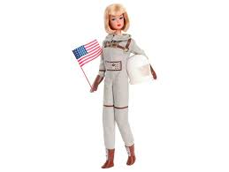

A primeira boneca Barbie, oficialmente chamada de Barbara Millicent Roberts, foi apresentada ao público em 9 de março de 1959 na Feira de Brinquedos de Nova York. Criada por Ruth Handler, cofundadora da Mattel, ela revolucionou o mercado por ser a primeira boneca com características adultas produzida em massa nos EUA.
Em 1975, a Barbie passou por uma fase marcante com lançamentos focados em esportes, tecnologia de cabelo e temas culturais. O destaque absoluto desse ano foi a linha voltada para os Jogos Olímpicos, preparando o terreno para as Olimpíadas de 1976
O ano de 1999 foi marcante para a Barbie, apresentando desde edições de colecionador luxuosas até linhas inovadoras que refletiam a transição para o novo milênio.
O ano de 2004 é considerado um dos marcos mais importantes na história da Barbie, tanto pelo lançamento do filme musical favorito de muitos fãs, A Princesa e a Plebeia, quanto por grandes mudanças na marca e na modelagem das bonecas.
Atualmente, em março de 2026, a Barbie continua focada em diversidade e inclusão, com lançamentos recentes que celebram diferentes identidades e datas comemorativas.
SEÇÃO DE BARBIES MAIS ICÔNICAS

Barbie Astronauta (1965) – Primeira Barbie a romper barreiras de carreira
.jpg)
Barbie Fashionista – A nova linha com mais diversidade de corpos, etnias e estilos.
.jpg)